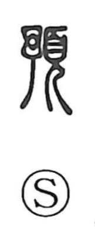

預

Kun: azukeru, azukaru | On: yo
to deposit ・ to entrust ・ beforehand
Explanation
A later phono-semantic formation, 預 pairs 予 as the phonetic element indicating the reading yo with 頁, which depicts a person bowing in reverence while wearing a ceremonial headdress. The 予 graph itself originally pictured a weaving shuttle. Together they conjure a scene of respectfully placing something before another, a nuance that early on allowed 預 to stand in for 予(豫) with the sense “in advance,” as in 預知 and 預備. In modern usage this settles into the concrete act of putting things into another’s care—hence ‘deposit’ in 預金 and ‘entrust’ in 預託. Not attested in Han inscriptions, the character appears to be a later creation.